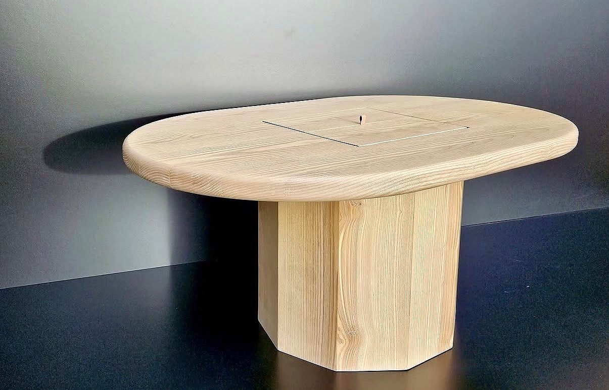
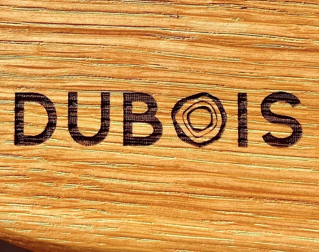
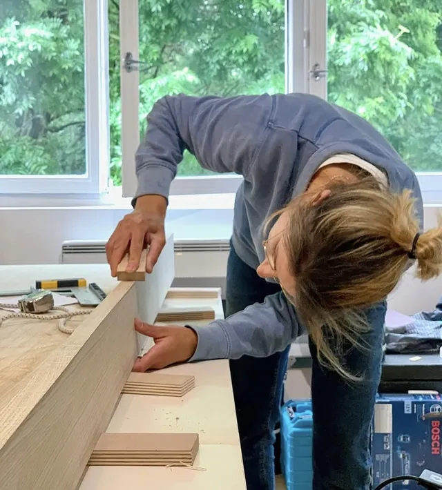
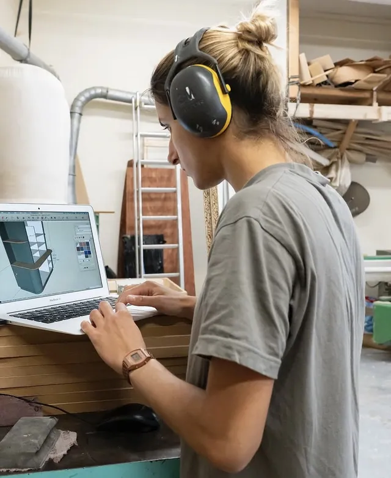
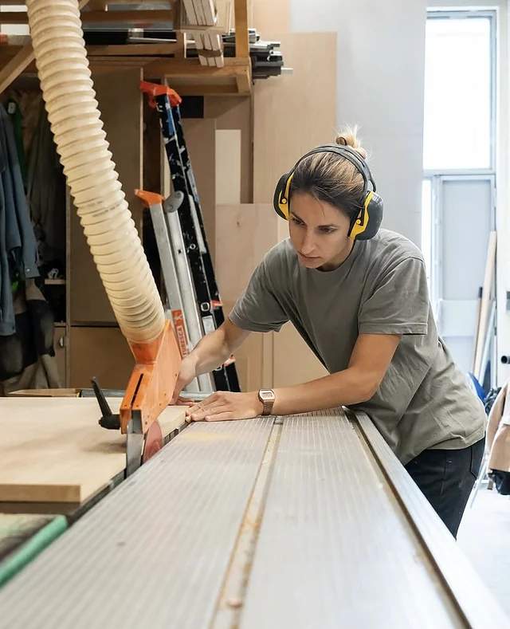
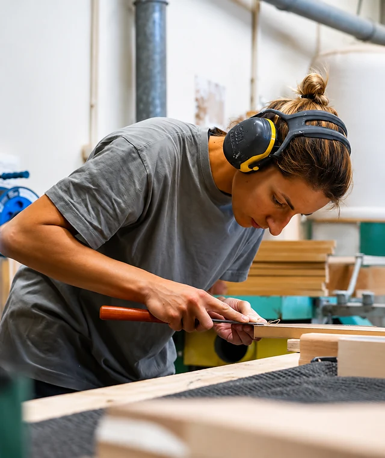
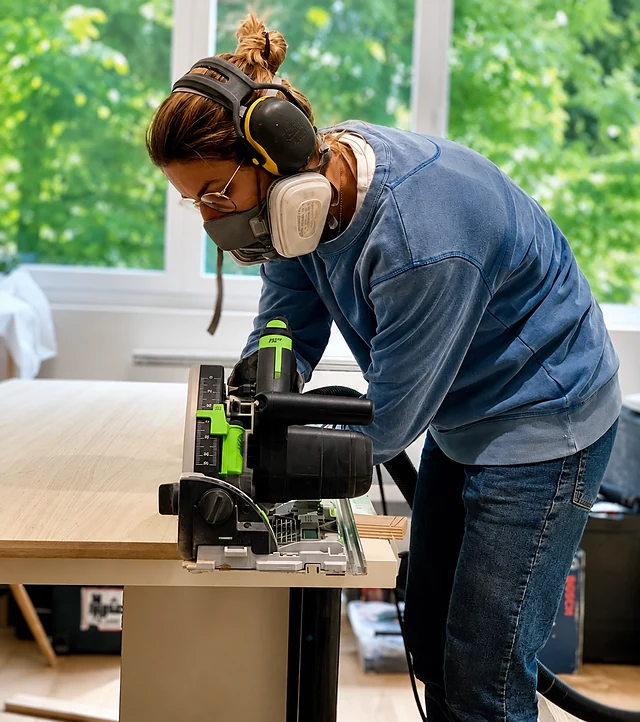
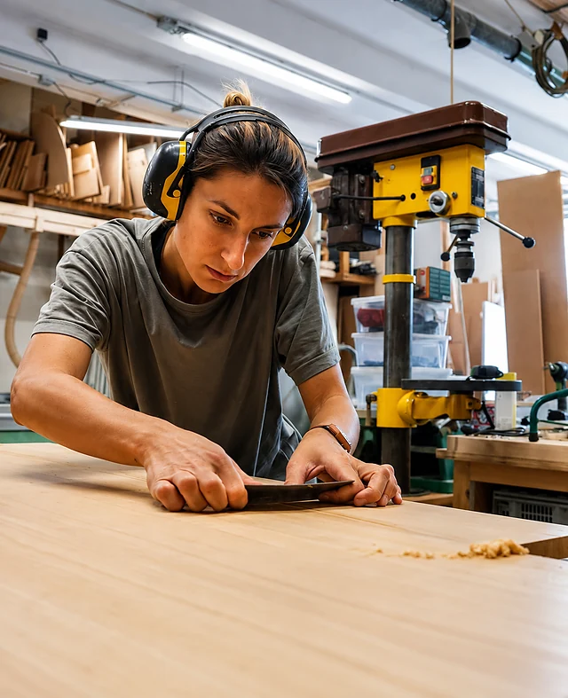
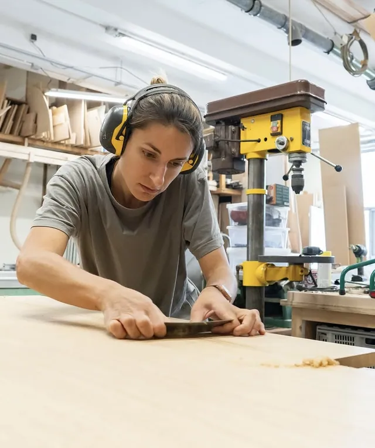
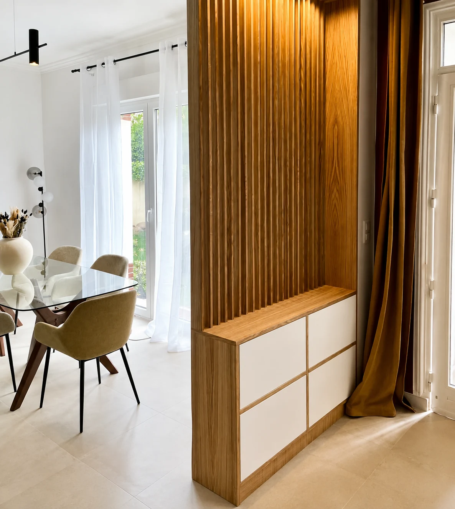

Ébénisterie / Menuiserie — Alice Dubois
Des meubles qui épousent vos murs, pas l'inverse.
Dressings, bibliothèques, cuisines et mobilier dessinés pour votre espace — pensés en 3D, fabriqués à l'atelier, posés chez vous.
L'approche
Chaque projet commence par un relevé, un crayon et une contrainte à résoudre.
Un mur qui n'est pas d'équerre, un plafond mansardé, une gaine technique à contourner, trente centimètres perdus dans un angle. Le sur-mesure n'est pas un luxe décoratif : c'est la seule réponse juste quand l'espace ne rentre dans aucun standard.
Ici, la même personne prend les cotes, dessine, débite, assemble et pose. Rien n'est sous-traité, rien ne se perd entre deux corps de métier.

La marque au fer Chaque pièce qui quitte l'atelier est marquée au fer. C'est la signature de l'atelier — et la preuve d'une fabrication à l'unité.
Réalisations
Des projets pensés pièce par pièce
Agencements complets, meubles isolés, petites pièces tournées à la main. Sélectionnez une catégorie pour filtrer.
Aucune réalisation dans cette catégorie pour l'instant.
Savoir-faire
Du relevé à la pose, cinq étapes
Un projet sur mesure se joue autant sur le chantier qu'à l'établi. Voici comment se déroule une commande, de la première visite à la dernière vis.
-

Le relevé
Visite sur place, cotes prises au millimètre, repérage des faux aplombs, des gaines et des prises. On parle usage avant de parler meuble : ce qu'on range, qui l'ouvre, à quelle fréquence.
-

Le dessin & la 3D
Le projet est modélisé en trois dimensions : vous le voyez avant qu'il existe. Proportions, sens du fil, teintes, quincaillerie — tout se décide à ce stade, devis détaillé à l'appui.
-

Le débit & l'usinage
Choix des bois, débit, corroyage, usinage. Les panneaux sont plaqués ou laqués, les massifs travaillés dans le fil. C'est ici que la pièce prend ses dimensions définitives.
-

L'assemblage & la finition
Montage à blanc, ajustements au ciseau, ponçage progressif, puis finition — huile, vernis ou laque selon l'usage de la pièce. Chaque meuble est marqué au fer avant de partir.
-

La pose
Livraison et installation chez vous. Les derniers ajustements se font sur place : scribage contre les murs, réglage des façades, mise à niveau. Le chantier est laissé propre.


L'atelier
Alice Dubois, ébéniste
Elle dessine, elle fabrique, elle pose. De la prise de cotes chez vous jusqu'au dernier coup de chiffon, le projet reste entre les mêmes mains — celles qui l'ont imaginé.
Ébénisterie et menuiserie : les deux métiers se répondent. L'un apporte la précision de l'assemblage et le soin du détail, l'autre la maîtrise des grands volumes et la capacité à s'accrocher au bâti existant.
Un meuble sur mesure réussi, c'est celui qu'on ne remarque pas tout de suite — puis qu'on ne peut plus imaginer autrement.
Ce qui est compris dans une commande
-
Conception en 3D
Vous validez le meuble en volume, avec ses teintes et ses proportions, avant tout démarrage.
-
Fabrication à l'atelier
Aucune sous-traitance : les pièces sont débitées, montées et finies sur place, à l'unité.
-
Bois massif & panneaux
Chêne, frêne, bouleau, panneaux laqués : le matériau est choisi pour l'usage, pas par habitude.
-
Pose comprise
Installation, ajustage contre les murs et réglages sont inclus dans le devis.
Matières & finitions
Le bon matériau au bon endroit
Massif là où ça travaille et où ça se touche, panneau là où il faut de la stabilité et de grandes surfaces. Sélectionnez une matière pour la découvrir.

Chêne
Dur, stable, au fil marqué. Il encaisse l'usage quotidien et se patine sans s'abîmer. C'est le bois des pièces qu'on touche : poignées, plans, tasseaux de claustra, chants apparents.
Petites pièces
L'atelier fabrique aussi à petite échelle
Planches & plateaux
Taillés dans les chutes de chêne les plus belles, chants adoucis, finition alimentaire.
Objets personnalisés
Coquetiers, boîtes, petits contenants — gravés au prénom, pour offrir.
Gravure & marquage
Un prénom, une date, un logo : la gravure se fait au fer ou à la fraise, dans le fil du bois.
Devis
Parlons de votre projet
Décrivez votre besoin en quelques lignes. Vous recevrez une réponse pour convenir d'une visite ; le devis détaillé est établi après le relevé.
Questions fréquentes
Ce qu'on demande le plus souvent
Le prix dépend des dimensions, du matériau et de la complexité : un claustra simple et un dressing toute hauteur avec aménagements intérieurs n'appartiennent pas au même ordre de grandeur. Le premier échange sert justement à situer l'enveloppe avant d'aller plus loin, pour éviter à chacun un devis hors sujet.
Il dépend de la taille du projet et du planning de l'atelier au moment de la commande. Le délai est annoncé précisément dans le devis, et non après coup. Les périodes chargées se réservent à l'avance : si votre projet est lié à une date (emménagement, naissance, travaux), signalez-le dès le premier message.
Oui. Un plan d'architecte ou un carnet de détails est un excellent point de départ : il suffit alors de vérifier la faisabilité, d'adapter les épaisseurs et les assemblages, puis de fabriquer. Les projets menés directement avec les particuliers suivent le même processus, avec la phase de dessin en plus.
Entièrement. Essence et sens du fil, teinte de laque, type de finition, charnières, coulisses, poignées ou absence de poignée : chaque choix est arbitré pendant la phase de dessin, avec des échantillons quand c'est utile. C'est aussi là qu'on ajuste le budget, car la quincaillerie pèse plus qu'on ne le croit.
Peu de choses, mais régulièrement. Un chiffon doux légèrement humide suffit au quotidien ; les surfaces huilées se rafraîchissent avec une nouvelle couche d'huile une à deux fois par an selon l'usage. Les consignes précises, propres à la finition choisie, sont remises à la pose.
Les deux. À côté des dressings et des bibliothèques, l'atelier fabrique des planches, des boîtes et des objets gravés — souvent taillés dans les plus belles chutes. C'est aussi une bonne façon de découvrir le travail de l'atelier avant un projet plus important.